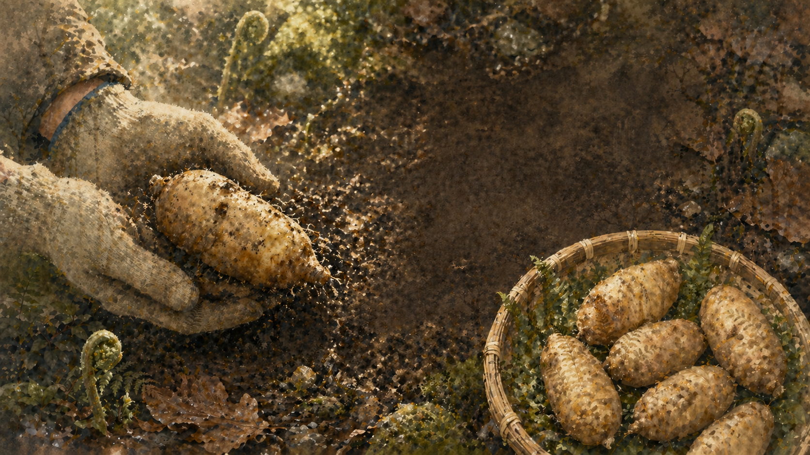
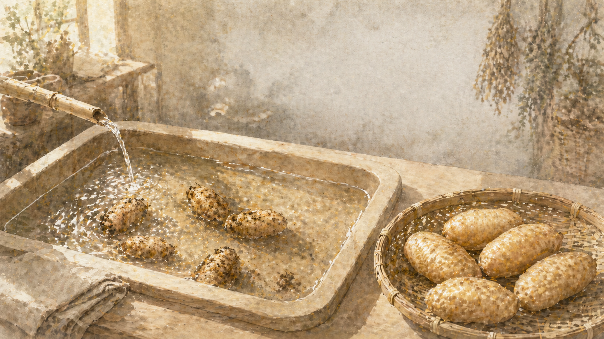
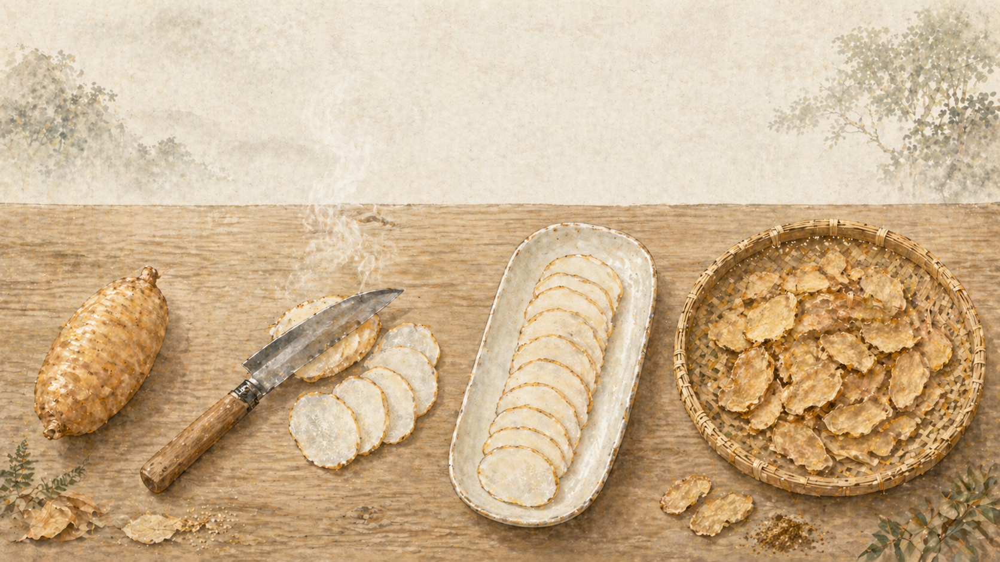
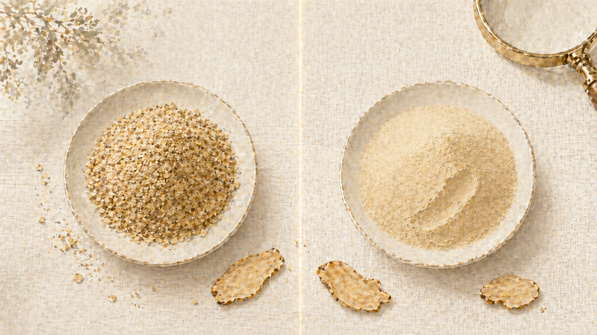
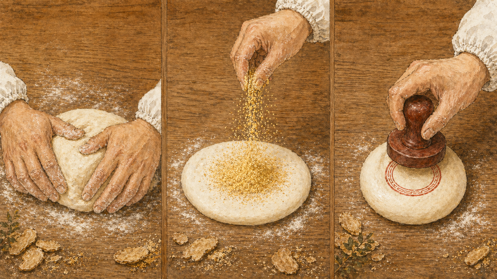
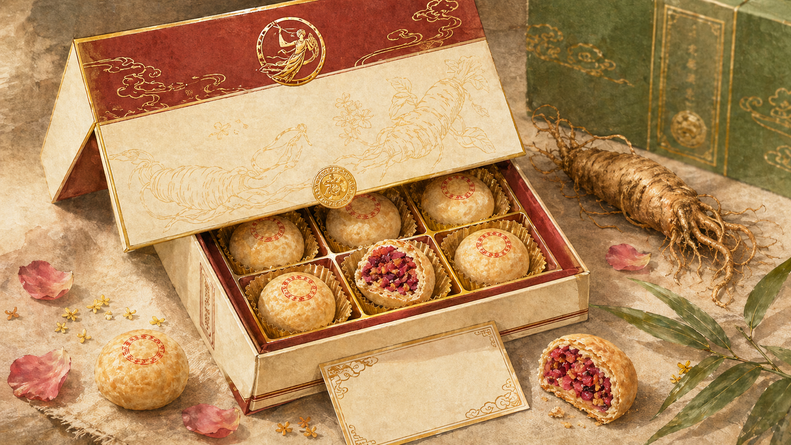

从昭通小草坝的云雾深山
到月中桂的百年烘焙车间
— 天麻溯源 · 卷首语
天麻没有普通植物那样明显的叶片，
它的生长离不开林下环境与菌材系统。
时间，是它最重要的原料之一。

从山林到车间，每一枚天麻都要经过外观、
完整度与基础品质的甄选。
每一枚，都有自己的去向。
从 一 枚 鲜 天 麻，
到 一 撮 细 腻 天 麻 粉。

清洗、分拣、剔除不合格原料 —
让进入下一道工序的每一份天麻都更可控。


山 里 的 天 麻，
来 到 月 中 桂。
近百年的糕点经验，让食养原料
有了更温和、更日常的表达方式。

天麻的清雅，遇见酥皮的麦香、馅料的细腻 —— 成为更适合当代人的东方食养糕点。
一口酥香，
既有昭通天麻的原料记忆，
也有月中桂糕点手艺的温度。

从 昭 通 小 草 坝 的 山 林，
到 月 中 桂 的 烘 焙 车 间，
再 到 你 的 手 中。
※ 本产品为食品，不替代药品。特殊人群及过敏体质者请根据自身情况谨慎食用。 具体产品配料、营养成分及检测信息以包装标识为准。